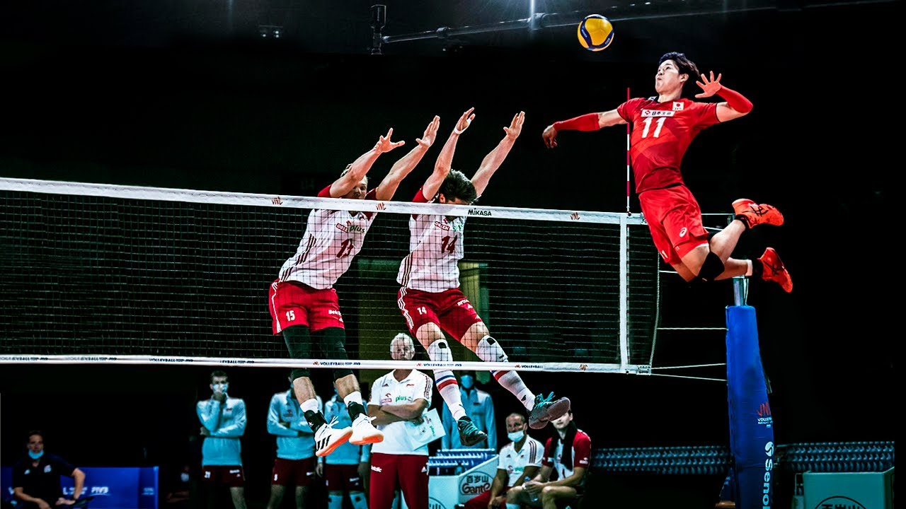

Yuji Nishida is a Japanese left-handed volleyball player. Currently Nishida plays for Panasonic Panthers at club level. Nishida made his debut with JTEKT Stings at V.League on 6 January 2018 in a match against Osaka Blazers Sakai. His impressive debut at the young age of 17 soon earned him a position in JTEKT's Starting 6,[5] as well as Japan men's national volleyball team. Nishida led the national team to seventh place at the 2020 Tokyo Olympics, its best result in 29 years. Nishida was one of the youngest players in the 2018 roster of the Japan men's national volleyball team and FIVB cup Final.[6] He made his first international performance with the Japanese national team in 2018 FIVB Volleyball Men's Nations League. In June 2018, he played a pivotal role in securing Japan's first win in 11 years against Italy where he collected 24 points from 21 spikes and 3 aces.[7] In September 2018, in a match against Argentina in 2018 FIVB Volleyball Men's World Championship, Nishida became the youngest player ever to score 30 points in a match.[8] In June 2019, Nishida broke serving records in the VNL history after hitting 7 aces in a single game during a match against Canada.[9]
 Full name Yuji Nishida Born 30 January 2000 (age 24) Mie, Japan Hometown Inabe Height 1.87 m (6 ft 2 in)[1] Weight 87 kg (192 lb) Spike 350 cm (138 in)[2] Block 330 cm (130 in) Volleyball information Position Opposite spiker Current club Japan Panasonic Panthers[3] Number 1 (national team) 11 (club)